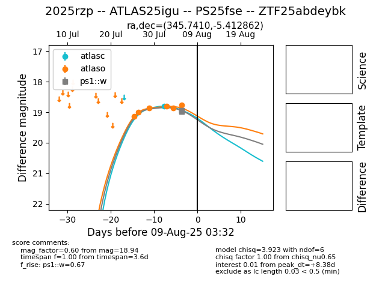

Target 2025rzp at 2025-08-09 06:12, see:
FINK: fink-portal.org/2025rzp
Lasair: lasair-ztf.lsst.ac.uk/objects/2025rzp
ALeRCE: alerce.online/object/2025rzp
TNS: wis-tns.org/object/2025rzp
YSE: ziggy.ucolick.org/yse/transient_detail/2025rzp
alt names
2025rzp (yse,tns)
ZTF25abdeybk (ztf,fink)
ATLAS25igu (atlas)
PS25fse (panstarrs)
coordinates:
equatorial (ra, dec) = (345.7410,-5.41286)
galactic (l, b) = (68.1295,-56.26649)
photometry
last atlasc=18.80, atlaso=18.80, ps1::w=18.94
1 atlasc, 6 atlaso, 4 ps1::w detections
